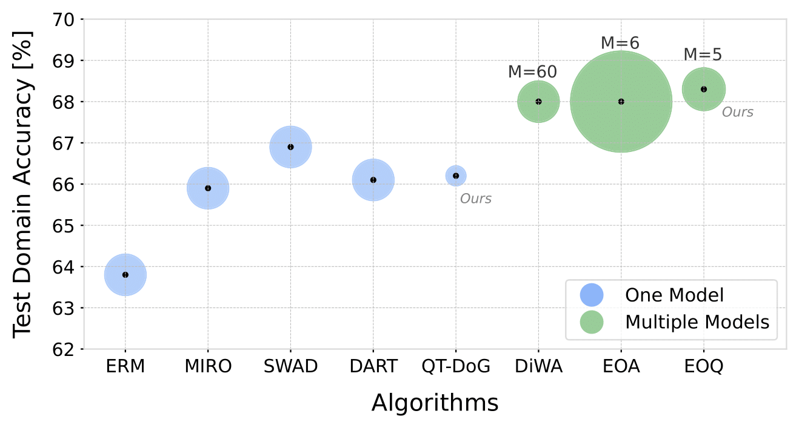
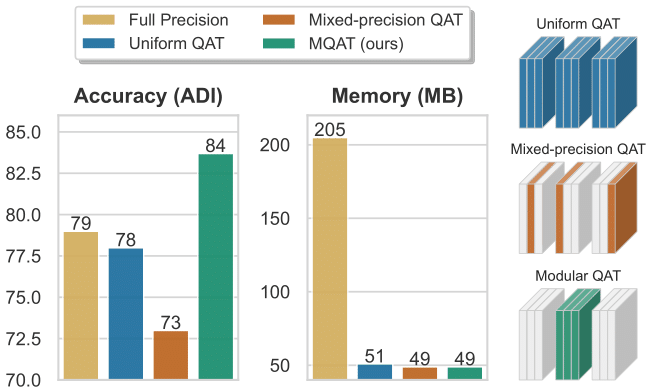

|
Saqib Javed I am a doctoral researcher at the CVLab at EPFL, working on Energy-Efficient Deep Networks under the supervision of Prof. Pascal Fua and Dr. Mathieu Salzmann. My current research focuses on 3D reconstruction using compressed Gaussian splatting, developing efficient quantized diffusion models, and reducing inference time for vision-language and large language models (VLMs and LLMs). These projects align with my broader goal of optimizing machine learning models for performance and efficiency. Prior to my PhD, I worked on hardware-friendly mixed-precision neural networks under the supervision of Prof. Luca Benini at the Integrated Systems Laboratory, ETH Zurich. I hold a master’s degree from TU Munich and ETH Zurich, where I cultivated a strong interest in machine learning algorithms designed for low-power devices. |

|
|

|
|
|
|
|
Temporally Compressed 3D Gaussian Splatting for Dynamic Scenes
Saqib Javed*, Ahmad Jarrar Khan*, Corentin Dumery, Chen Zhao, Mathieu Salzmann arXiv, 2024 project page / arXiv / code TC3DGS compresses dynamic 3D Gaussian representations using pruning, mixed-precision quantization, and trajectory interpolation, enabling efficient real-time applications. |

|
Self-Ensembling Gaussian Splatting for Few-Shot Novel View Synthesis
Chen Zhao, Xuan Wang, Tong Zhang, Saqib Javed, Mathieu Salzmann arXiv, 2024 project page / arXiv / code SE-GS enhances novel view synthesis by reducing overfitting through uncertainty-aware perturbations and temporal regularization, outperforming existing methods. |
|

|
QT-DoG: Quantization-aware Training for Domain Generalization
Saqib Javed, Hieu Le, Mathieu Salzmann arXiv, 2024 project page / arXiv / code
QT-DoG leverages weight quantization to promote flatter minima, enhancing generalization across unseen domains while reducing model size and computational costs. |
|

|
Modular Quantization-Aware Training for 6D Object Pose Estimation
Saqib Javed, Chengkun Li, Andrew Lawrence Price, Yinlin Hu, Mathieu Salzmann TMLR, 2024 project page / paper / code
QT-DoG leverages weight quantization to promote flatter minima, enhancing generalization across unseen domains while reducing model size and computational costs. |

{kind=link}
Miscellanea |
Experience |
Agile Robots AG, Research Intern - Applied Machine Learning.
Max Planck Institute, Research Intern - Deep Learning on FPGA. BMW Group, Autonomous Driving Campus, Research Intern – HW/SW Optimization of CNNs. GE-Healthcare Intern – Software Development and Testing. Siemens AG Research Intern – Deep Learning Model Deployment. Intel Working Student – Software Development. |
Supervised Students |
Chengkun Li(Now PhD Student at EPFL)
[Modular Quantization for Object Detection.]
Ziqi Zhao (Now PhD Student at HKU). [Modular Quantization for 6D pose.] Ahmad Jarrar Khan(Master Student at EPFL) [Compressed Gaussians for Dynamic 3D scenes.] Kepler Warrington-Arroyo (Consultant, Aubep) [Vision Language Model compression]. |
Academic Service |
Reviewer, CVPR 2025, 2024, 2023
Reviewer, ICLR 2025 Reviewer, NeurIPS 2024 Reviewer, ECCV 2024 Reviewer, ICCV 2023 Reviewer, ACCV 2024 Reviewer, TPAMI |
Teaching Assistant |
Introduction to machine learning CS-233, Fall 2022, Spring 2023,2024,2025.
Probability and Statistics MATH-232, Fall 2023. Responsible Software CS-290, Fall 2024 |